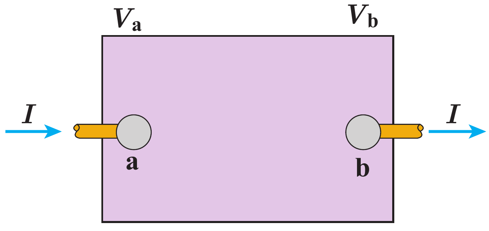

انرژی الکتریکی و توان الکتریکی
تعریف 33 انرژی الکتریکی: انرژی که در مدار میتواند تبدیل به کار شود و به انرژیهای دیگر تبدیل شود.

\[ \require{cancel} \begin{aligned} I & = \frac{q}{t} \\ R & = \frac{V}{I} \\ U & = V q = W \\ & = R I^2 t \\ & = V I t \\ & = \frac{V^2}{R} t \\ \end{aligned} \]
تعریف 34 توان الکتریکی: تولید یا مصرف انرژی در واحد زمان.
\[ \require{cancel} \begin{aligned} P & = \frac{W}{t} \\ & = I V = I (V_b - V_a) \\ \end{aligned} \]
\(P\) توان برحسب وات \(W\)
\(I\) جریان برحسب آمپر \(A\)
\(V\) اختالف پتانسیل برحسب ولت \(V\)
توان مفید منبع نیرو محرکه: به بقیه انرژی میدهد. مانند باتریها
\[ \require{cancel} \begin{aligned} P & = V I = \mathcal{E}I - rI^2 \end{aligned} \]
- توان مصرفی: از بقیه انرژی میگیرد. مانند مقاومتها
\[ \require{cancel} \begin{aligned} P & = R I^2 \\ & = \frac{V^2}{R} \end{aligned} \]
نکته. \[ 1 kWh = 3.6 \times 10^6 J \]
تعریف 35 بازده مولد الکتریکی:
\[ \require{cancel} \begin{aligned} \eta & = \frac{V}{\mathcal{E}} \times 100 \\ & = \frac{R}{R + r} \times 100 \end{aligned} \]